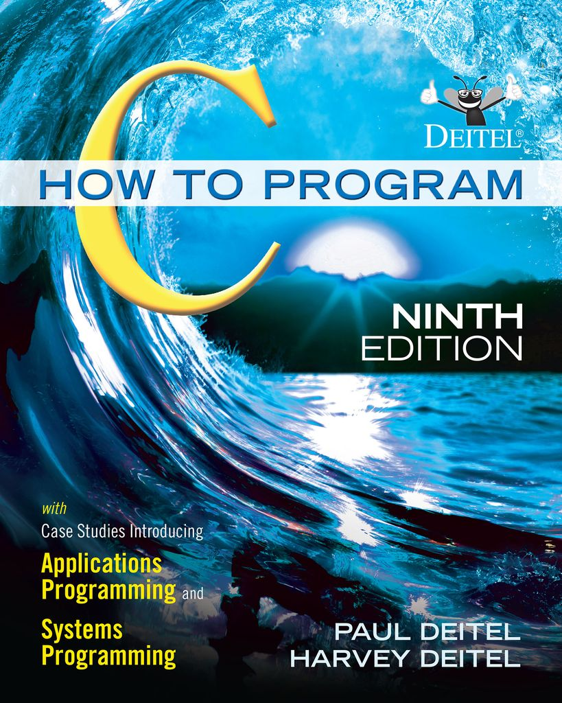
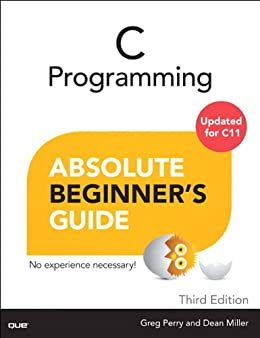
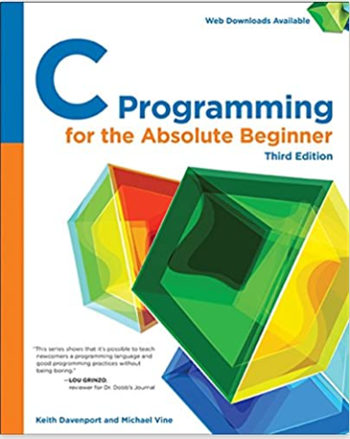
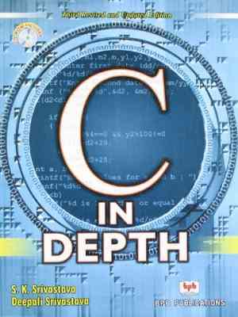
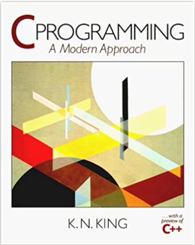

As a beginner in the world of programming, it can be overwhelming to try and find the right set Books to Learn C Programming in 2023. There are so many options available, and it can be difficult to know which ones are the most helpful and which ones are a waste of time.
This can be especially true if you are just a beginner and don't have much experience with programming in general. It's important to choose a book that is well-written and easy to understand, with clear explanations and helpful exercises that will guide you through your learning process.
As a seasoned C programmer with more than 15 years of experience, I have a very good understanding of what it takes to learn this powerful language. I am here to recommend the best books on C programming for beginners, taking into account factors such as the clarity of the explanations, the quality of the exercises, and the overall effectiveness of the teaching approach.
My recommendations will give you a strong foundation in C programming and set you up for success as you continue to learn and grow in your skills in 2023 and beyond.
Learning to program in C can be a challenging but rewarding experience. It's a language that is widely used in a variety of fields, including systems programming, embedded systems, and scientific computing. With the right book and the right approach, you can learn the basics of C programming and start building your skills and knowledge in this exciting and in-demand field.
Whether you are just a beginner or have some programming experience under your belt, I am confident that my recommendations will help you find the right book to get you started on your C programming journey.
10 Best Books to Learn C Programming for Beginners & Experts
1. The C Programming Language
By Brian Kernighan and Dennis Ritchie

"The C Programming Language" is a classic book that was first published in 1978. Written by Brian Kernighan and Dennis Ritchie, the book provides a detailed introduction to the C programming language, which is one of the most widely-used programming languages today. It covers the basics of C programming, including data types, operators, control structures, and functions, as well as more advanced topics such as pointer, memory management, and the standard library. The book is known for its clear and concise writing style, making it an excellent resource for both novice and experienced programmers. It's considered the de-facto guide to the C Programming Language.
2. C Primer Plus
By Stephen Prata

"C Primer Plus" is a comprehensive guide to the C programming language written by Stephen Prata. The book is intended for both novice and experienced programmers, and covers the fundamentals of C programming, including data types, operators, control structures, and functions, as well as more advanced topics such as memory management, file input and output, and the standard library. The book also includes a thorough introduction to the C++ programming language and its features, also provide a great deal of practical exercises to practice the reader understanding. It's a great source for those who want to learn C and C++ with a progressive approach.
3. Programming in C
By Stephen Kochan

"Programming in C" is a beginner-friendly guide to the C programming language written by Stephen Kochan. The book provides a comprehensive introduction to the basics of C programming, including data types, operators, control structures, and functions. It also covers more advanced topics like pointer and memory management, as well as the standard library, with a gradual progression, easy to understand writing style and plenty of examples to illustrate the concepts. The book is well-suited for those who are new to programming and wish to learn C programming quickly.
4. C How to Program
By Paul Deitel and Harvey Deitel

"C How to Program" is a comprehensive guide to the C programming language written by Paul Deitel and Harvey Deitel. The book covers the fundamentals of C programming, including data types, operators, control structures, and functions, as well as more advanced topics like memory management and the standard library. The book also includes a detailed introduction to object-oriented programming, practical examples and exercises throughout the book. It's an excellent resource for both novice and experienced programmers who want to master C programming.
5. C Programming Absolute Beginner's Guide
By Greg Perry

"C Programming Absolute Beginner's Guide" is a beginner-friendly guide to the C programming language written by Greg Perry. The book provides a comprehensive introduction to the basics of C programming with easy to follow instructions and examples, covering concepts such as data types, operators, control structures, and functions. It is aimed at complete beginners who want to learn programming and specifically C programming with a practical hands-on approach. The book also includes exercises and quizzes to help the readers to solidify their understanding.
6. C Programming for the Absolute Beginner
By Michael Vine

"C Programming for the Absolute Beginner" is a beginner-friendly guide to the C programming language written by Michael Vine. The book is aimed at people who are new to programming and wish to learn the C language quickly and easily. The book provides a comprehensive introduction to the basics of C programming, including data types, operators, control structures, and functions, with a hands-on approach, featuring examples and exercises to help readers solidify their understanding. It's a great resource to learn C programming if you are starting from scratch.
7. C in Depth
By S. K. Srivastava and J. P. Srivastava

"C in Depth" is an advanced guide to the C programming language written by S. K. Srivastava and J. P. Srivastava. The book covers the more advanced and less common aspects of C programming language, with a focus on the depth of understanding. It's not aimed for beginners, but for experienced programmers looking to expand their understanding of the C language, diving into the intricacies and nuances of the language, as well as its features and functionality. The book covers topics like memory management, preprocessor directives, concurrency, and low-level programming, among other things.
8. C Programming, A Modern Approach
By K. N. King

"C Programming, A Modern Approach" is a comprehensive guide to the C programming language written by K. N. King. The book is designed as an introduction to the C programming language for students and professionals, covers the basics of C programming as well as advanced topics, such as memory management, concurrency, and low-level programming.
The book presents the material in a clear, easy-to-understand manner and includes plenty of examples and exercises to help readers solidify their understanding. The approach is modern, meaning that the book covers the recent standard of the C programming language and the new features that are available. It's considered a great resource for anyone who wants to learn C programming in a modern and effective way.
9. C for Dummies
By Dan Gookin

"C for Dummies" is a beginner-friendly guide to the C programming language written by Dan Gookin. The book provides a comprehensive introduction to the basics of C programming, with a light and easy-to-understand writing style and a step-by-step approach. It covers topics such as data types, operators, control structures, and functions, aimed to make learning C programming as easy and accessible as possible, it uses plenty of examples and analogy to make the learning process fun and smooth. The book is well-suited for those who are new to programming or have no experience in C and want to get started quickly.
10. C Unleashed
By Richard Heathfield

"C Unleashed" is an advanced guide to the C programming language written by Richard Heathfield. The book provides in-depth coverage of C language, with a focus on the advanced features and the intricacies of the language.
It is intended for experienced C programmers who wish to deepen their understanding of the language and its use in systems programming, with a coverage of advanced topics such as memory management, concurrency, low-level system programming, and advanced data structures. The book is considered a comprehensive resource for those who want to take their C programming skills to the next level.
Few more book recommendations for learning C programming
Apart from my top 10 recommendations, here are a few more options to consider as you continue your journey to mastering this powerful language.
C: A Reference Manual
By Samuel P. Harbison and Guy L. Steele Jr.
This book is a comprehensive reference guide to the C programming language. It covers all of the standard C language features and is suitable for experienced programmers looking for a detailed reference.
C Programming for Scientists
By John W. Carter
This book is geared towards scientists and engineers who want to learn C for their work. It covers the basics of C programming and also includes chapters on scientific computing and engineering applications.
C by Example
By Neil Rhodes and Peter H. Salzman
This book is suitable for beginners and takes a hands-on approach to learning, with plenty of examples and exercises to help you practice your skills. It covers the basics of C programming and also includes chapters on data types, control structures, and functions.
From comprehensive reference guides to hands-on exercises and examples, these books cover a wide range of topics and cater to various skill levels, from beginners to experienced programmers. Whether you want to focus on the basics or delve into more advanced concepts, these books will provide the guidance and support you need to succeed.